ECG Blog #259 (71) — Blốc hai tầng là gì?
Bạn sẽ đọc dải nhịp 3 chuyển đạo trong Hình-1 như thế nào? Không có thông tin lâm sàng.
- Có blốc AV không? Nếu có — Loại nào?
- Hay là có các PAC (ngoại tâm thu nhĩ — Premature Atrial Contractions)?

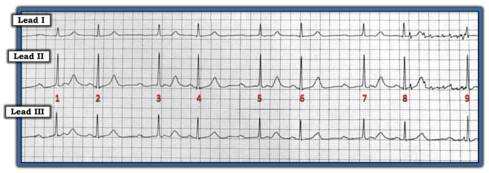
=======================================
LƯU Ý #1: Đây là một bản ghi phức tạp. Vì kinh nghiệm đọc điện tâm đồ của người đọc rất khác nhau — tôi trình bày lời giải cho bản ghi này theo hai dạng:
- THỨ NHẤT: Lời giải "Nhanh" — giải thích cơ chế cơ bản của nhịp này.
- THỨ HAI: Lời giải "Chi tiết" — tôi minh họa trực quan trong PHẦN BỔ SUNG bằng các giản đồ bậc thang (laddergram) từng bước một . Tôi xin nhấn mạnh rằng dù vẽ giản đồ bậc thang có thể khó — tôi dám chắc bất kỳ người đọc nào của ECG Blog này cũng sẽ hiểu rõ hơn cơ chế của rối loạn nhịp hôm nay khi xem các giản đồ bậc thang được tô màu dễ theo dõi trong các Hình 4 đến 14 bên dưới.
=======================================
LƯU Ý #2: Đến đây, một số người đọc có thể muốn nghe ECG Audio PEARL dài 5:45 phút trước khi đọc Suy nghĩ của tôi về điện tâm đồ trong Hình-1. Bạn có thể tham khảo Suy nghĩ của tôi về bản ghi này bất cứ lúc nào (nằm bên dưới ECG MP-71).
=======================================

ECG Media PEARL #71 (5:45 phút Audio) hôm nay — Ôn lại hiện tượng Wenckebach hai tầng ra khỏi nút AV (CÁCH nhận ra hiện tượng này — và cách phân biệt nó với Mobitz II).
SUY NGHĨ để đi đến Lời giải "Nhanh" của tôi:
Như thường lệ — tôi tiếp cận việc đọc nhịp hôm nay một cách hệ thống, bằng cách xét lần lượt Ps, Qs & 3Rs (Xem ECG Blog #185). LƯU Ý — Không bắt buộc phải đánh giá theo đúng thứ tự này (tức là tôi thường xem độ rộng QRS hoặc tính đều của nhịp trước khi đánh giá hoạt động nhĩ — tùy theo yếu tố nào dễ đánh giá nhất trên bản ghi đang xem). Với nhịp trong Hình-1 — quá trình suy nghĩ tuần tự của tôi như sau:
- Phức bộ QRS hẹp ở cả 3 chuyển đạo ghi đồng thời — vậy nhịp có vẻ là trên thất.
- Nhịp trong Hình-1 không Regular (đều). Vì vậy, Rate (tần số) sẽ thay đổi. Tuy vậy — nhịp có một khuôn mẫu, dưới dạng các khoảng R-R dài và ngắn xen kẽ nhau (tức là có nhịp theo nhóm (group beating)).
ĐIỂM THEN CHỐT (PEARL) #1: Để chứng minh nhịp trong Hình-1 thật sự là nhịp theo nhóm — Hãy đo tất cả các khoảng R-R! Việc này dễ nhất khi dùng compa đo (calipers). Làm vậy sẽ xác lập được rằng mỗi khoảng R-R "dài hơn" đều có thời gian gần như bằng nhau (tức là ~1280 msec.) — và — mỗi khoảng R-R "ngắn hơn" cũng gần như bằng nhau (tức là ~820 msec.). Thấy một hay nhiều khoảng R-R trên bản ghi lặp lại sẽ khẳng định có nhịp theo nhóm.
- LƯU Ý: Dù có nhiễu đường nền rõ giữa nhát #8-9 (khiến không đánh giá được hoạt động nhĩ) — ta vẫn có thể thấy khoảng R-R giữa nhát #8-9 bằng các khoảng R-R dài hơn khác trên bản ghi này.
- Để biết thêm về khái niệm Nhịp theo nhóm — Xem ECG Blog #186.
Tiếp tục với Cách tiếp cận Tuần tự của tôi cho Nhịp hôm nay:
- Có sóng P đều suốt bản ghi (các mũi tên ĐỎ trong Hình-2).

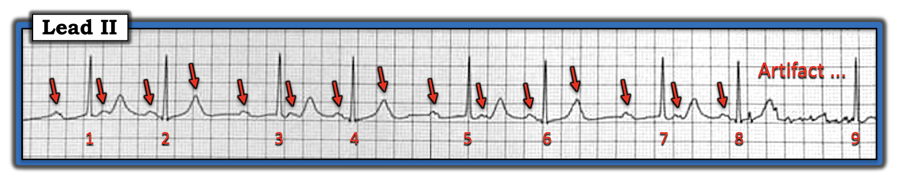
ĐIỂM THEN CHỐT (PEARL) #2: Vì nhiều sóng P trong bản ghi hôm nay bị che lấp trong sóng ST-T — lúc đầu có thể không thấy ngay nhịp nhĩ là đều.
- Một lần nữa — compa đo giúp xác định điều này dễ dàng. Tìm một chỗ trong Hình-2 mà bạn chắc chắn thấy ít nhất 2 sóng P liên tiếp. 3 mũi tên ĐỎ đầu tiên ở đầu bản ghi đánh dấu một chỗ như vậy.
- Đặt compa đo đúng bằng khoảng P-P của các sóng P liên tiếp này. Làm vậy sẽ khẳng định có sóng P thứ 4 trong Hình-2 — xuất hiện đúng lúc, và làm sóng T của nhát #2 nhọn thêm (mũi tên ĐỎ thứ 4 trong Hình-2).
- Các mũi tên ĐỎ tôi đặt trong phần còn lại của Hình-2 khẳng định các sóng P đều, đúng lúc xuất hiện suốt bản ghi này.
Còn lại là đánh giá thông số cuối cùng trong Cách tiếp cận Ps, Qs & 3R — tức là xác định XEM có sóng P nào (và nếu có thì bao nhiêu) Related (liên quan) với các phức bộ QRS lân cận hay không.
ĐIỂM THEN CHỐT (PEARL) #3: Cách dễ nhất để đánh giá thông số thứ 5 này, tức là có sóng P nào trong Hình-2 liên quan với các phức bộ QRS lân cận hay không — là bắt đầu bằng việc nhìn phía trước nhát kết thúc mỗi khoảng R-R dài hơn (tức là nhìn phía trước các nhát #1, 3, 5 và 7 trong Hình-2).
- CÂU HỎI: Có sóng P nào phía trước các nhát #1, 3, 5 và 7 không?
- Nếu có — Khoảng PR phía trước mỗi phức bộ QRS này có hằng định không?
- Điểm MẤU CHỐT — NẾU bạn tìm được những chỗ trong nhịp mà cùng một khoảng PR lặp lại — thì bạn đã xác lập được rằng nhiều khả năng có ít nhất một phần các xung nhĩ này được dẫn truyền. Càng tìm được nhiều chỗ có khoảng PR giống hệt nhau lặp lại — càng chắc chắn rằng có dẫn truyền của ít nhất một số xung nhĩ.
Về Hình-2:
- Các khoảng PR trước nhát #1, 3, 5 và 7 đều = 0,40 giây. Việc mỗi khoảng PR này đều có thời gian bằng nhau — gợi ý mạnh rằng các nhát này (mỗi nhát kết thúc một "khoảng ngưng" tương đối trong nhịp) — có được dẫn truyền, dù kèm blốc AV độ 1 kéo dài.
CÂU HỎI:
- Trong Hình-2 còn khoảng PR nào khác lặp lại không?
TRẢ LỜI:
- Các khoảng PR trước nhát #2, 4, 6 và 8 trong Hình-2 cũng lặp lại! Các khoảng PR này ngắn hơn nhiều so với các khoảng PR trước nhát #1, 3, 5 và 7 — nên tôi hoàn toàn không chắc sóng P nào đang dẫn truyền phức bộ QRS nào — NHƯNG — việc có 2 bộ khoảng PR lặp lại trong Hình-2 không phải là ngẫu nhiên!
Tổng Hợp Lại Tất cả: Lời giải "Nhanh" cho nhịp phức tạp trong Hình-2 dựa trên các dấu hiệu điện tâm đồ vừa mô tả theo cách tiếp cận hệ thống:
- Có nhịp theo nhóm (tức là nhịp đôi, với các khoảng R-R ngắn hơn và dài hơn xen kẽ).
- QRS hẹp — nên nhịp là trên thất.
- Nhịp nhĩ đều (tức là có các sóng P xoang đều — như các mũi tên ĐỎ cách đều nhau trong Hình-2).
- Có 2 bộ khoảng PR lặp lại (tức là các khoảng PR trước nhát #1,3,5 và 7 đều bằng nhau — và — các khoảng PR trước nhát #2,4,6 và 8 đều bằng nhau). Điều này không phải do ngẫu nhiên — và cho bạn biết rằng có dẫn truyền các xung này.
Các nhận xét bổ sung:
- Có nhiều sóng P (các mũi tên ĐỎ trong Hình-2) hơn phức bộ QRS — vì vậy không phải tất cả sóng P đều được dẫn truyền. Vì nhịp nhĩ đều — nhưng không phải tất cả các sóng P xoang xuất hiện đều đặn này đều được dẫn truyền — có một dạng nào đó của Blốc AV độ 2.
- Dấu hiệu nhịp theo nhóm, đi kèm một dạng nào đó của blốc AV độ 2 — gợi ý mạnh một kiểu dẫn truyền Wenckebach nào đó.
- Mức độ nặng lâm sàng của blốc AV độ 2 này khó xác định khi không có thông tin lâm sàng về bệnh nhân — nhưng việc QRS hẹp (và do đó nhịp là trên thất) — với nhiều nhát được dẫn truyền — và tần số thất chung không chậm (tức là khoảng 60/phút) — đều gợi ý rằng tiên lượng của bệnh nhân có thể không xấu, và không nhất thiết cần máy tạo nhịp (Bàn thêm về ý nghĩa lâm sàng của nhịp này ở dưới, trong lời giải chi tiết nằm ở Phần bổ sung).
ĐIỂM THEN CHỐT (PEARL) #4: Một dấu hiệu nữa ủng hộ dẫn truyền Wenckebach — là có tính chu kỳ Wenckebach. Như đã bàn trong Pearl Audio hôm nay — 3 đặc điểm dễ nhận ra nhất của Tính chu kỳ Wenckebach là: i) Nhịp theo nhóm; ii) Nhịp nhĩ đều (hoặc gần đều); và, iii) Khoảng ngưng chứa nhát bị rớt ngắn hơn hai lần khoảng R-R ngắn nhất.
- Lý do của iii) — là với Wenckebach AV, mức tăng khoảng PR lớn nhất thường nằm giữa nhát thứ 1 và thứ 2 trong mỗi nhóm. Lý do việc nắm được đặc điểm này của tính chu kỳ Wenckebach quan trọng trên lâm sàng — là khi khoảng ngưng chứa nhát bị rớt dài hơn hai lần khoảng R-R ngắn nhất — nhiều khả năng một "điều gì khác" chứ không phải blốc Wenckebach là nguyên nhân của rối loạn nhịp (tức là PAC bị blốc, khoảng ngưng xoang do Hội chứng suy nút xoang).
- Trong Hình-2 — Lưu ý các khoảng R-R ngắn hơn đo được 820 msec. — và các khoảng R-R dài hơn đo được 1280 msec. — nên các khoảng R-R dài hơn rõ ràng ngắn hơn hai lần các khoảng R-R ngắn hơn. Vì vậy — điều này phù hợp với "tính chu kỳ Wenckebach".
GIẢN ĐỒ BẬC THANG (LADDERGRAM): Để minh họa cơ chế cho Lời giải "Nhanh" của ca hôm nay — tôi đã vẽ một giản đồ bậc thang (trong Hình-3). Tiền đề chính của giản đồ bậc thang được đề xuất này — là có blốc AV hai tầng bên trong nút AV (đường ngang chấm chấm màu ĐEN trong Tầng Nút AV).
- Xin nhấn mạnh: Dù vẽ giản đồ bậc thang có thể phức tạp — hiểu một giản đồ bậc thang đã được vẽ sẵn cho bạn lại DỄ đến bất ngờ (Phần ôn tập dễ theo dõi về khái niệm này đã được trình bày trong ECG Blog #188).
- Từ giản đồ bậc thang trong Hình-3, hẳn bạn đã thấy rằng tôi đề xuất có blốc Wenckebach ở 2 tầng bên trong nút AV (tức là dẫn truyền AV 4:3 ra khỏi tầng nút AV trên — và dẫn truyền AV 3:2 ra khỏi tầng nút AV dưới).
- Về lâm sàng — Ý nghĩa của rối loạn dẫn truyền trong Hình-3 sẽ tùy thuộc bệnh sử và bối cảnh lâm sàng. Dù có 2 sóng P liên tiếp không được dẫn truyền (ngay trước và ngay sau nhát thứ 2 trong mỗi nhóm) — đây không nhất thiết là blốc "mức độ cao", và không nhất thiết cần máy tạo nhịp!
- LƯU Ý: Để xem minh họa từng bước CÁCH tôi dựng giản đồ bậc thang trong Hình-3 — Xem PHẦN BỔ SUNG bên dưới.

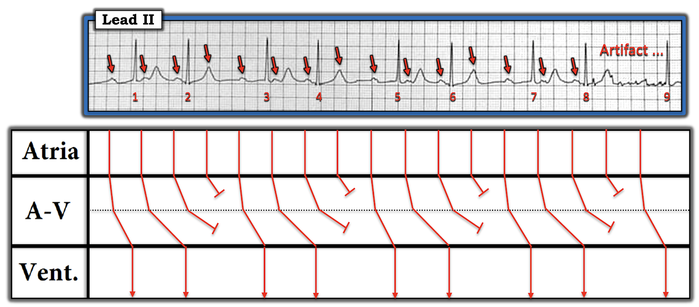
==================================
Lời cảm ơn: Tôi xin cảm ơn Victor Svensson (từ Växjö, Thụy Điển) và Peter Hammarlund (từ Helsingborg, Thụy Điển) đã cho tôi biết ca này và cho phép tôi sử dụng bản ghi này.
==================================
Các bài ECG Blog liên quan đến Ca hôm nay:
- ECG Blog #185 — Ôn lại Cách tiếp cận Ps, Qs & 3Rs để đọc nhịp một cách hệ thống.
- Bài ngày 25 tháng 10 năm 2021 trên Dr. Smith's ECG Blog — Bình luận của tôi (ở cuối trang) trình bày cách tiếp cận của tôi với một ca blốc Wenckebach hai tầng khác.
- ECG Blog #186 — Nhấn mạnh tầm quan trọng của Nhịp theo nhóm — và ôn lại khi nào nên nghi ngờ Blốc AV độ 2 ( = Wenckebach AV) dạng Mobitz I .
- ECG Blog #188 — Ôn lại những điều cốt yếu để đọc (và/hoặc vẽ) Giản đồ bậc thang, kèm ĐƯỜNG LINK tới nhiều giản đồ bậc thang tôi đã vẽ và bàn chi tiết trong các bài blog khác.
- ECG Blog #243 — Ôn lại một ca cuồng nhĩ (AFlutter) với Wenckebach hai tầng ra khỏi nút AV.
- ECG Blog #226 — Phân tích một Ca bệnh (kèm một ECG Video Pearl dài 11:00 phút hướng dẫn bạn từng bước dựng một giản đồ bậc thang có dẫn truyền Wenckebach và blốc hai tầng bên trong nút AV) phức tạp.
- ECG Blog #251 — Ôn lại các khái niệm tính chu kỳ Wenckebach và "Dấu chân" của Wenckebach (Mời bạn xem Pearl #65 Audio trong bài blog này, tập trung vào các khái niệm đó).
- ECG Blog #164 — Ôn lại một ca Blốc AV độ 2 Mobitz I (với phần bàn chi tiết về "Dấu chân" của Wenckebach) điển hình.
==================================
PHẦN BỔ SUNG (ngày 2 tháng 11 năm 2021): Dành cho những ai muốn xem cách tiếp cận từng bước tôi đã dùng để đi đến giản đồ bậc thang trong Hình-3 — tôi đã bổ sung các Hình #4 đến 14.
- BẤM vào Hình-4 — để phóng to Hình này. Sau đó chuyển lần lượt từng hình qua 10 Hình tiếp theo ở chế độ phóng to để xem cách tiếp cận từng bước của tôi để dựng giản đồ bậc thang đã trình bày ở Hình-3.
==================================

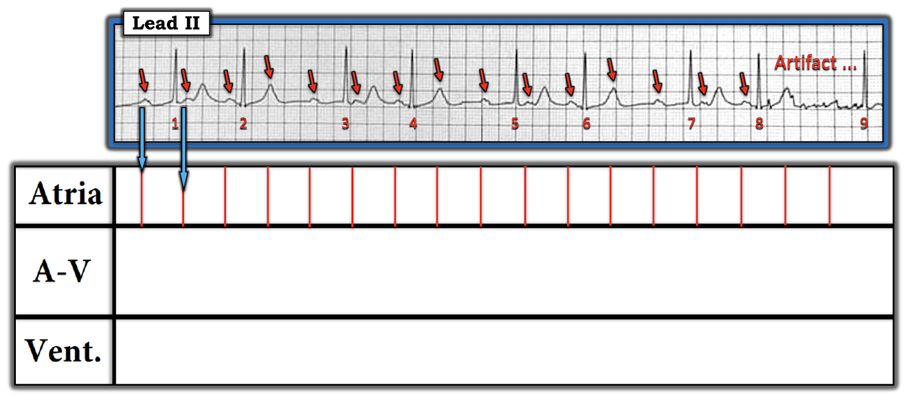

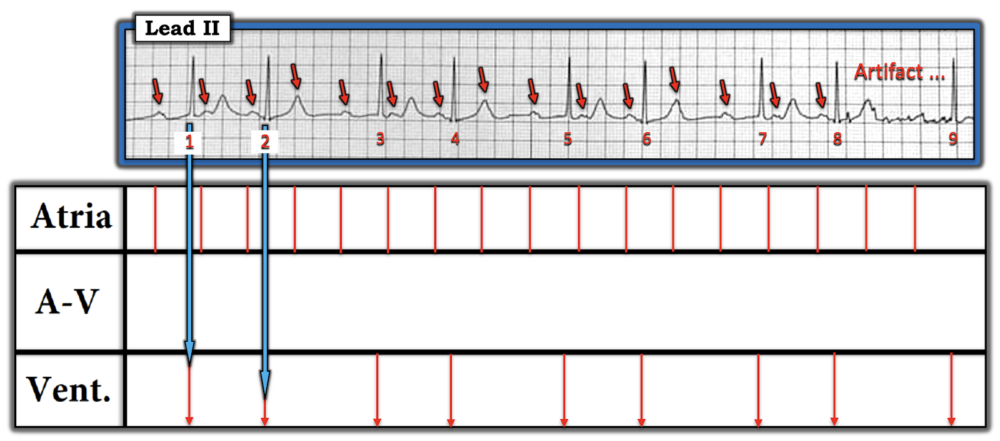

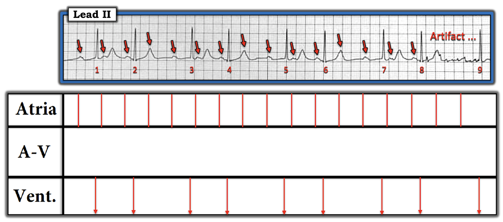

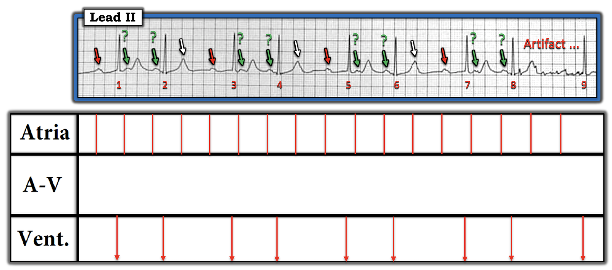

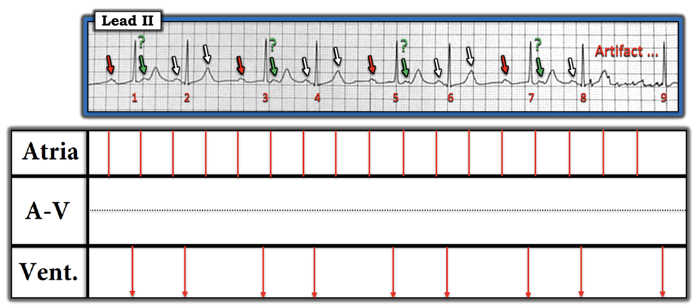

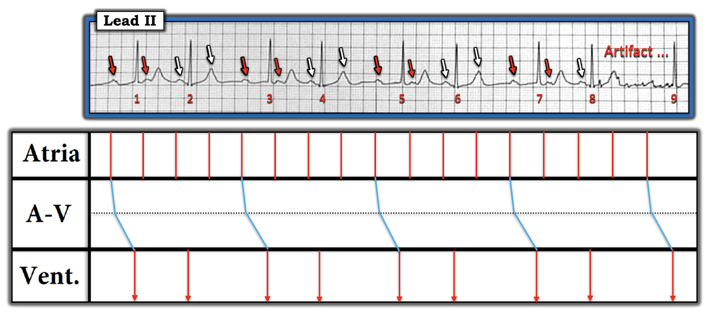

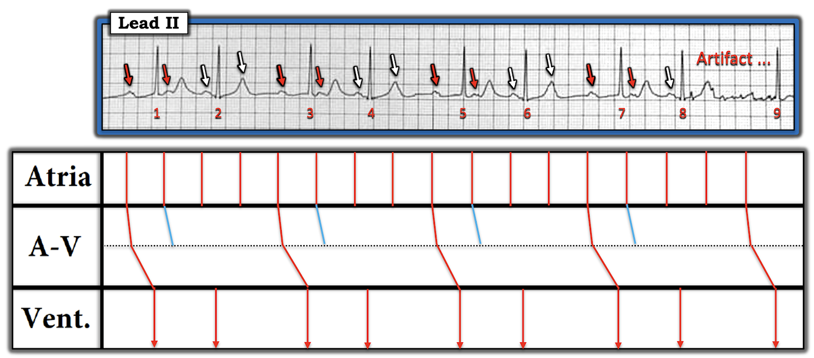

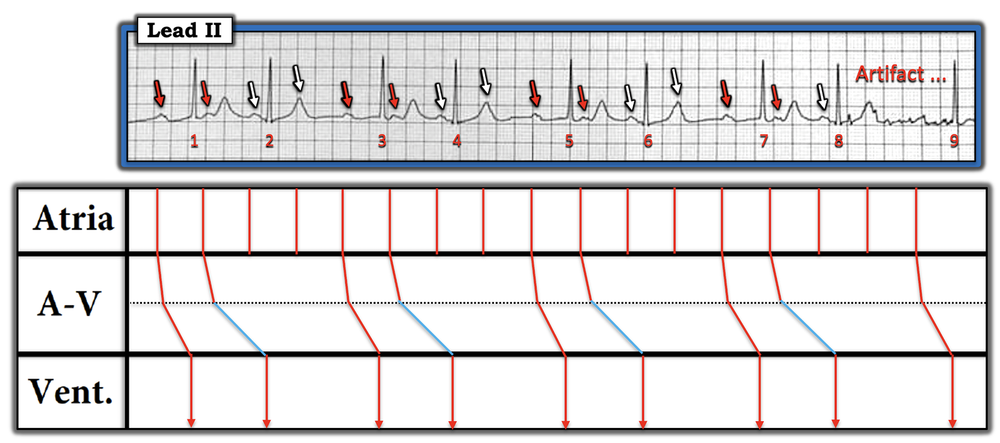

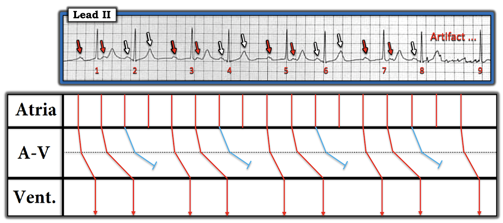

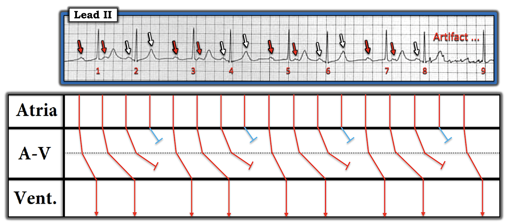

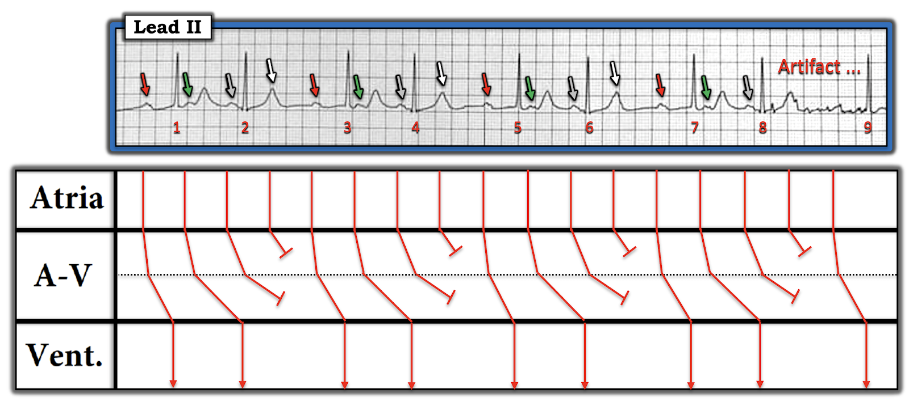
— Các sóng P có mũi tên ĐỎ biểu thị dẫn truyền với khoảng PR kéo dài 0,40 giây.
— Các sóng P có mũi tên XANH LÁ cũng được dẫn truyền, dù với khoảng PR còn kéo dài hơn nữa (tới hơn 0,70 giây một chút).
— Các sóng P có mũi tên XÁM đi qua được tầng nút AV trên — nhưng không qua được tầng dưới.
— Các sóng P có mũi tên TRẮNG thậm chí không qua được tầng nút AV trên.
ĐIỀU CỐT LÕI: Giản đồ bậc thang này hợp lý. Tất cả sóng P và tất cả phức bộ QRS trong bản ghi này đều đã được giải thích. Có Blốc AV độ 2 với dẫn truyền Wenckebach hai tầng ra khỏi nút AV, biểu hiện dẫn truyền 4:3 ở tầng nút AV trên — và dẫn truyền AV 3:2 ở tầng dưới.
ĐIỂM THEN CHỐT CUỐI CÙNG (PEARL): — Ý nghĩa của rối loạn dẫn truyền trong Hình-14 sẽ tùy thuộc vào bệnh sử và bối cảnh lâm sàng. Dù có 2 sóng P liên tiếp không được dẫn truyền (Cả sóng P XÁM lẫn sóng P TRẮNG trong Hình-14 đều không được dẫn truyền) — nhịp này không nhất thiết là blốc "mức độ cao", và không nhất thiết cần đến máy tạo nhịp! Thay vào đó, có dẫn truyền Wenckebach ra khỏi 2 tầng bên trong nút AV — và Wenckebach AV ít có khả năng cần tạo nhịp vĩnh viễn hơn nhiều so với Mobitz II.

PHẦN BỔ SUNG #2 (ngày 4 tháng 11 năm 2021):
Như tôi vẫn thường nhấn mạnh — một rối loạn nhịp phức tạp có thể có nhiều hơn một cách giải thích khả dĩ. Tôi xem đây là điều tích cực — vì nó mở rộng tầm nhìn của chúng ta trong "thế giới" đọc điện tâm đồ. Bằng cách này, chúng ta học hỏi lẫn nhau.
- Chuyên môn đọc rối loạn nhịp của David Richley vốn đã quen thuộc với nhiều bạn theo dõi bất kỳ diễn đàn điện tâm đồ nào trên internet. Tôi nghĩ việc bổ sung ý kiến của Dave về một cách giải thích khả dĩ khác cho điện tâm đồ trong ca hôm nay là rất đáng giá:
Dave đã viết như sau:
Ken — Khi lần đầu thấy điện tâm đồ anh đăng gần đây nhất, tôi lập tức nghĩ đến 2 đường dẫn truyền trong nút AV – một đường nhanh, một đường chậm. Rồi tôi xem lời giải thích tài tình của anh và nghĩ rằng nó có lẽ hợp lý hơn nhiều so với gợi ý của chính tôi. Tuy vậy — tôi gửi kèm một giản đồ bậc thang để minh họa điều tôi nghĩ ban đầu (Hình-15):
- Blốc 4:1 ở đường nhanh — và cũng blốc 4:1 ở đường chậm, với thời điểm sao cho cứ cách một xung thì có một xung bị blốc đồng thời ở cả hai đường.
- Tôi không cho rằng điều này nhất thiết đúng — nhưng nó minh họa một điều mà cả hai chúng ta đã biết từ lâu — rằng các hình ảnh điện tâm đồ rối loạn nhịp phức tạp thường có thể có nhiều hơn một cách giải thích khả dĩ về mặt lý thuyết.

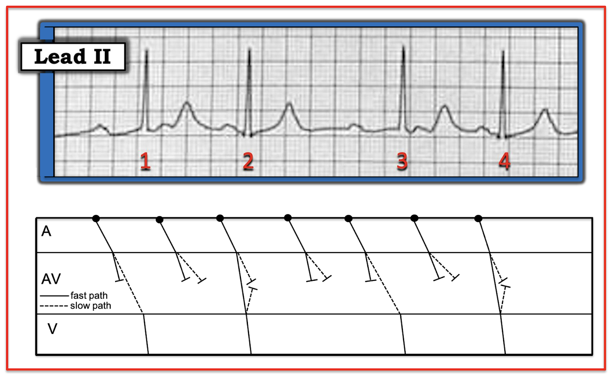